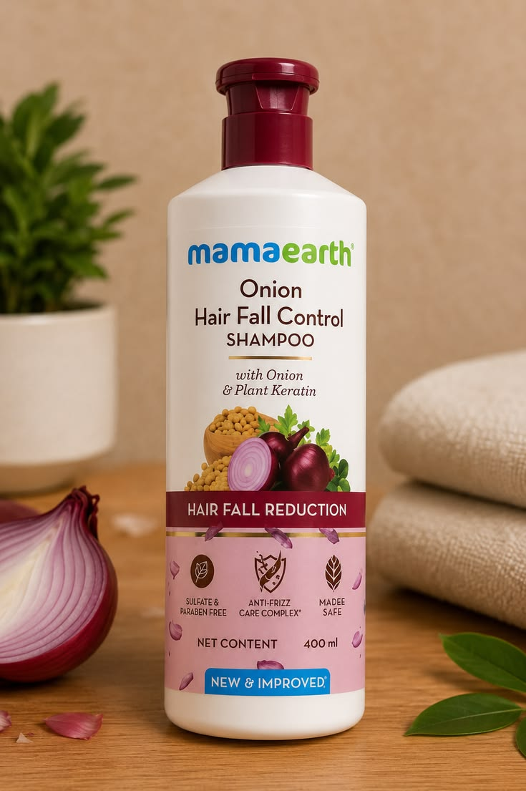
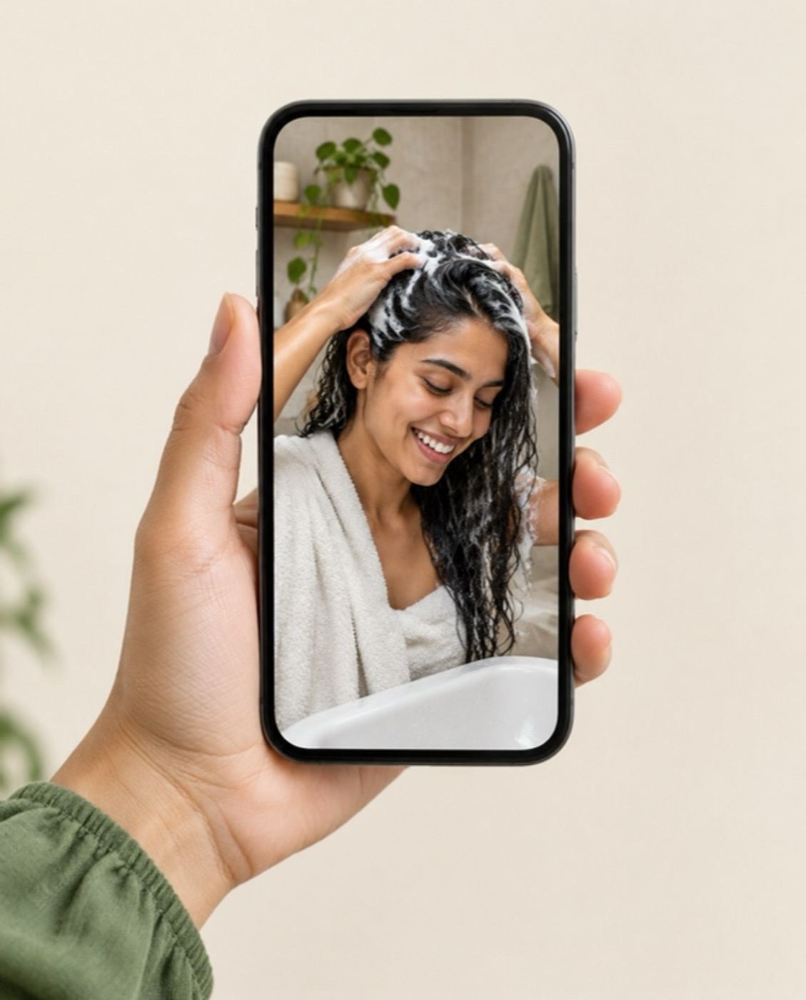
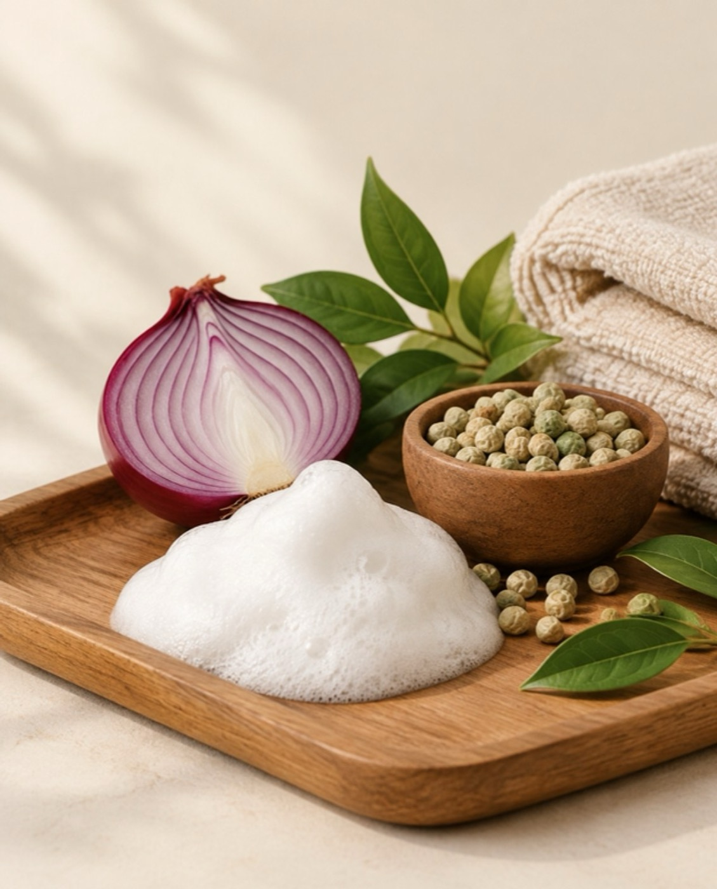

Bringing Mamaearth’s Onion Hair Fall Control Shampoo into everyday Instagram conversations about hair fall, through creators people already trust.

Mamaearth Onion Hair Fall Control Shampoo
Influencer marketing
Marqueting Venture
Instagram Reels & posts
Influencer marketing, campaign team
Shampoo is one of the most habitual buys there is: people use the same bottle for years. Every brand on the shelf promises less hair fall, and audiences scroll straight past ads that say so.
The job was to make a switch to onion-powered hair care feel worth trying, by letting creators show the shampoo inside the wash-day routines their followers already watch, in their own voice.
As part of the team at Marqueting Venture, I worked on Mamaearth’s creator-led Instagram campaign for the Onion Hair Fall Control Shampoo, built around three kinds of content, each with a different job.
Product introductions, wash-day routines and first-hand creator experiences: the lather, the rinse and the result, not the bottle on a pedestal.
Product-focused visuals with captions that carried the key messages, from onion and plant keratin as hero ingredients to a sulfate-free wash you can keep, so the story held up even without sound.
Comments, saves and shares treated as the real signal, turning creator content into two-way conversation with the audience.

Reels: wash day, in a creator’s own words.

Posts: one clear message per frame, starring the onion.
Campaign performance data belongs to the brand and isn’t shown here.
If I ran the next chapter, I’d drop the filters entirely. Hair fall takes weeks to judge, so the proof should too: honest, unedited creator experiences of the shampoo, told over four weeks, not one post.
An unfiltered first-wash Reel. Natural light, no edits, the real lather and feel.
No filter, no edit. My first wash with onion shampoo, honestly.
Everyday posts and Stories showing the shampoo in a real weekly routine, from wash to dry.
Two weeks in. Here’s my wash day, start to finish.
A follow-up Reel on how hair feels after four weeks, and what didn’t change. Honesty is the point.
Four weeks of onion shampoo: what I noticed, and what I didn’t.
Creators people already trust do more for a hair-care product than any studio shoot.
Wash day is a ritual. Showing the shampoo inside it sells the habit, not just the bottle.
Saves and comments say more about intent than likes ever will.
I’m Riya, founder of Riya Desk. I combine strategy, creativity and AI to help businesses become the brand people choose.